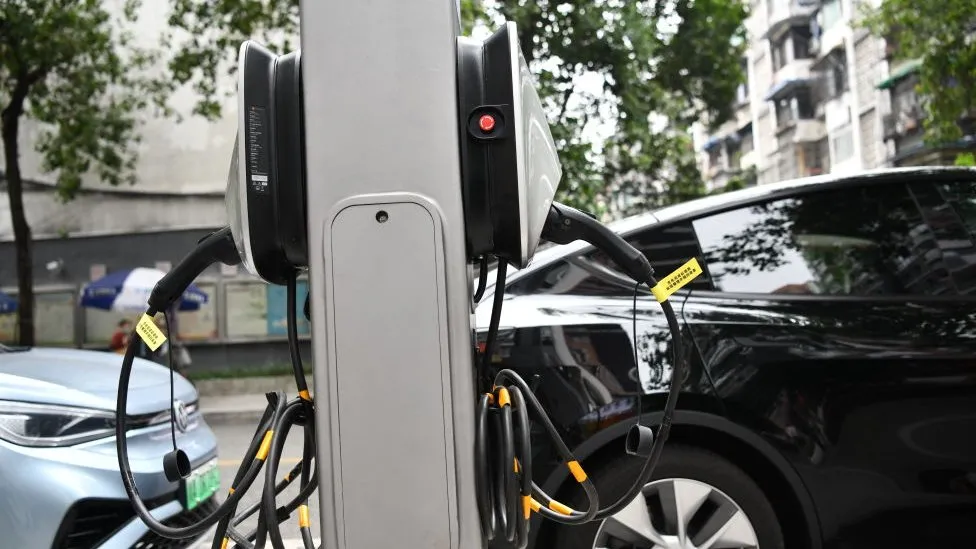
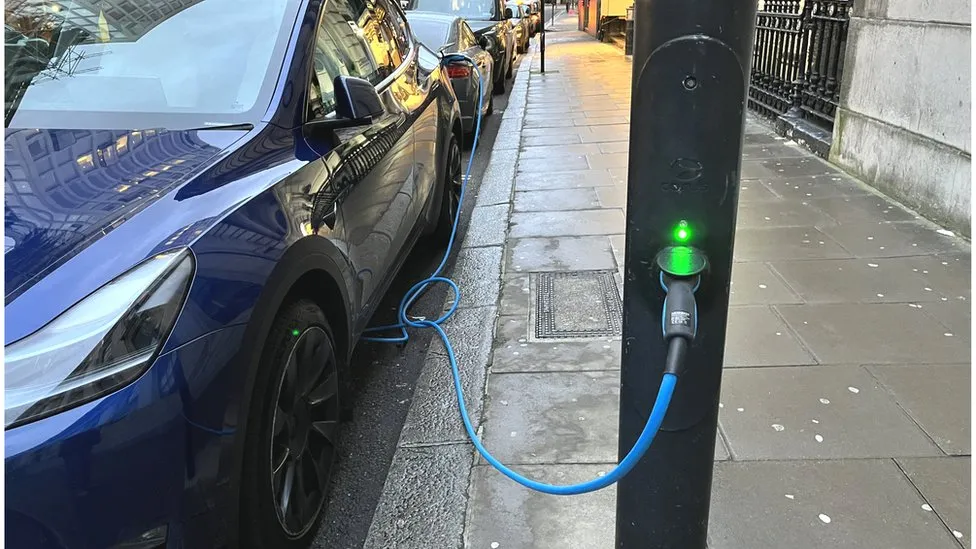

Where will all the electric cars be charged?
By Christine Ro
Technology of Business reporter
10.1.2023
If electric cars are ever to become mainstream, then we are going to need a lot more places to charge them.
The key is to find space for chargers where people would actually use them. Kerbside is the obvious spot, but there chargers are competing for space with pedestrians, wheelchair users, and others.
One solution is to simply repurpose existing infrastructure, without adding extra clutter to the built environment.
For instance, lamppost electric vehicle (EV) charging is expanding. A big advantage of repurposing existing lampposts is that cities don't have to dig in order to lay new cables, says Artis Markots, the chief executive of the Latvian start-up SimpleCharge, which is focusing on Central and Eastern Europe.
There are no complex permitting requirements, and a lamppost can be complemented with an EV charger within an hour.
The cost is also considerably lower than a fixed charger, Mr Markots reports, at roughly €1,500 ($1,600; £1,300) per charger.
The Dutch company CityCharge also offers lamppost charging, but with a different model that requires new cables to be installed. CityCharge replaces conventional lighting poles with aluminium poles.
